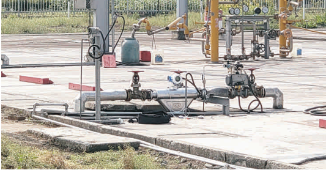

Массовые расходомеры Mass-EXPERT для измерения и дозирования агрессивных химических сред — кислот, щелочей и растворителей. Прямое измерение массового расхода исключает влияние переменной плотности и температуры, обеспечивая высочайшую точность в непрерывных технологических процессах.
Кориолисовые расходомеры Mass-EXPERT способны работать с широким спектром химически активных веществ благодаря специальным материалам измерительных трубок и корпуса.
Концентрированная и разбавленная серная кислота (H₂SO₄), соляная кислота (HCl), азотная кислота (HNO₃), фосфорная кислота (H₃PO₄), плавиковая кислота (HF) и другие.
Едкий натр (NaOH), гидроксид калия (KOH), растворы аммиака (NH₄OH) и другие щелочные соединения, требующие коррозионностойких материалов контактных частей.
Ацетон, метанол, этанол, изопропанол, толуол, ксилол, этилацетат, метилэтилкетон (MEK) и другие органические растворители, используемые в химическом синтезе.
Хлорное железо, сульфаты, нитраты, хлораты, перекись водорода (H₂O₂), хлорорганические соединения и другие жидкие химические реагенты и промежуточные продукты.
Для обеспечения коррозионной стойкости и долговечности в условиях химического производства Mass-EXPERT предлагает специальные материалы измерительных трубок.
Кориолисовая технология прямого массового измерения — оптимальное решение для химической промышленности
Исключает влияние переменной плотности и температуры среды, характерное для химических процессов с изменяющимся составом и нагревом/охлаждением.
Специальные материалы трубок (Хастеллой, Тантал, Титан) обеспечивают надёжную работу в самых агрессивных средах и максимальный срок службы.
Точность измерений 0,1–0,2% позволяет точно дозировать реагенты в реакторах непрерывного действия, минимизируя отклонения состава продукта.
Измерение массового расхода не требует коррекции по температуре. Даже при экзотермических/эндотермических реакциях результат остаётся точным.
Нет подвижных частей, не требуется замена уплотнений или калибровка. Снижение эксплуатационных затрат и времени простоев.
Одновременное измерение массового расхода, плотности и температуры. Один прибор заменяет несколько, упрощая систему КИПиА.
В химической технологии плотность реагентов часто меняется в ходе процесса — из-за изменения температуры, концентрации или фазового состава. Массовый расходомер измеряет именно массу, а не объём, поэтому результаты не зависят от этих факторов. Это особенно важно при дозировании дорогостоящих реагентов и при учёте продуктов с переменной плотностью.

Проверенные комбинации сенсоров, материалов и опций для типовых задач химических производств
Рекомендованы для вязких и абразивных химических сред. Отсутствие изгибов исключает застойные зоны и упрощает очистку.
Коррозионностойкие сплавы для контакта с агрессивными химическими средами.
Высокоточное измерение для ответственных задач дозирования и учёта.
Опция для процессов с критическими требованиями к стабильности температуры среды.
Для точного дозирования реагентов в реакторах непрерывного действия выбирайте комбинацию: сенсор L-типа + трубки из Хастеллоя C276 или Тантала + трансмиттер ME200 с поддержкой HART/Modbus. При необходимости высокой термостабильности — дополните конфигурацию изотермическим кожухом. Точность 0,1% гарантирует минимальное отклонение состава готового продукта.
Наши инженеры помогут выбрать оптимальный тип сенсора, материал трубок и дополнительное оснащение для вашей химической задачи — от лабораторного стенда до крупнотоннажного производства.
Связаться с нами На главную